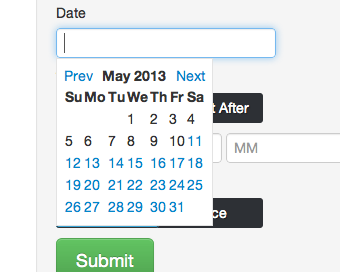

Project Nightcrawler Timeline Document
March 15, 2013
Meeting to finalize project choice and discuss technologies.
Settled on python as the choice language for the back end server
because of readability, portability, good documentation, and
relative familiarity by the team members. Also decided on Bootstrap
and javascript to structure and power our user-facing interfaces.
Bootstrap provides a rapid solution to well-designed assets and javascript
offers a clean way for dynamic updating.
March 17, 2013
Discovered multiple bus lines had been shut down following multiple
accidents. As such, our bus resources now only include Bolt Bus, Megabus,
Suburban, and possibly Lucky Star. Train resources are still NJ Transit,
MTA, and Amtrak. We will likely use Skyscanner to access airline info.
March 26, 2013
Had a meeting setting up github accounts. Set up repository. Three people
designated to write scripts to start scraping. One person to build a server
to deploy to. Getting ready to meet on Thursday.
March 28, 2013
Established and deployed on AWS the Hello World Flask application. Can
be found at http://nightcrawler-env-sugarrrypg.elasticbeanstalk.com/.
This website is currently a demonstration of usage of Flask deployed to AWS
and domain CNAME by namecheap. Below is a screenshot of the basic homepage of our site. We bought the url www.projectnightcrawler.com over spring break.
April 1, 2013
Attempted to fix development environment of a team member. Ended up
installing a virtual machine. Megabus scraper kind of working. Drew up
web site schematics. Discussed database structures. Suburban scraper
can traverse pages, working on traversing tables.
April 7, 2013
Made scripts for Orbitz. Skyscanner didn't work out. Flightstats was
considered and we made an account for it. Attempted to scrape Kayak, but
not particularly successful.
April 9, 2013
Made decision to switch from Amazon to Heroku for speed. We now
have the ability to scrape Megabus, Orbitz, and Suburban effectively.
Homepage looks good with Bootstrap.
Finished move to Heroku. Static files now working? Also, project is now
hosted at http://radiant-meadow-8177.herokuapp.com/. Still able to reach
website at projectnightcrawler.com
April 14, 2013
We worked on getting the time functionality working for requests working.
We first implemented in the python scripts functionality that allows for
input of an hour and a minute and a boolean variable for whether the provided
time is the time that the user want to arrive by or the time that the user
wants to depart by.
We also worked on sorting the data by price and time (shortest to longest) and
got the flight information (already available on the backend) to display on the website.
April 21, 2013
We got time preferences working on the front end (website). We did more
exploration of possible scraping techniques for train information. We have
yet to include any trains in our service. We also worked on getting the
auto-complete for arrival and destination location and the pop-up calendar to
work. We also worked to improve the style of our website. The screen shots below show to autocomplete menu and pop-up calendar in action.

April 26, 2013
Today, we worked on getting the loading gif and results page working and were
sucessful in doing that. We also worked on search algorithm for combinging
different pieces of routes to get the fastest and cheapest overall route.
Finally, we sucessfully scraped both NJ transit and Amtrak trains.
May 2, 2013
Today, we spent some time making sure that we had train codes properly entered
in the database. We also are setting up on the backend a way to display links
on our results page that a user can click to be directed to a page that allows
them to purchase the desired ticket. We also are working on a more sophisticated
algorithm to find the shortest route (i.e. by combining multiple modes of
transportation).
May 7, 2013
Today, we worked on displaying multiple legs for the Amtrak train results
(not just the original origin and the final destination). We also realized
that we needed to use javascript to process post requests on the front-end
to get amtrak links to work.
May 8, 2013
Today, we worked on our power point for the demo. We also got got NJ
transit fully working including mulit-leg trips. We fixed a bug related
to displaying prices. We also worked on displaying maps on our website
so that users can see a visual depiction of their route.
May 9, 2013
We worked on the links and also on fixing some of the links that we realized were broken on the website (before some of our link we simply redirecting to the home page of the travel service, not exactly the desired result). We also created a logo and integrated it with our website and worked on some of the aesthetic aspects of our site. We put the total elapsed time and total cost in bold lettering at the bottom of each route. Our logo is shown below.
May 10, 2013
We presented our project demo today. We met around noon to debug our site a little more and practice our presentation. We found a bug in the New Jersey transit scraping code, that was introduced the night before during a late night coding session. The bug was very subtle, but once we found it and fixed it, we ran through our demo before heading down to the presentation room. Our presentation seemed to go pretty smoothly.
May 12, 2013
We got the links working fully working today. Some of them had broken recently, but we thoroughly tested them this time, so they should be good now. We debugged a New Jersey transit issue, which led us to fixing an incorrect NJ transit code in our database. We fixed formatting issues (such as a space that we were missing before the word "minutes" on our results page). We also wrote code to hand cases for when the user enters improper input on our site.
May 13, 2013
We worked on the write-up. We also worked on a more efficient way to get flight results from Orbitz. We are now getting two sets of results, one set that is sorted by elapsed time and another that is sorted by price. This saves our algorithm some time. Since some of our bootstrap tools don't work for Internet Explorer, we wrote code to return an error message when our page is loaded using Internet Explorer, telling users to please use Firefox, Chrome, Safari, etc. We also made more progress with maps tonight. We now display more accurate maps and made both the map and results pop-up windows more readable for cases in which the internet window is expanded or contracted. We also fixed an error in the database related to the code for the aiport nearest to Fairhaven, MA.